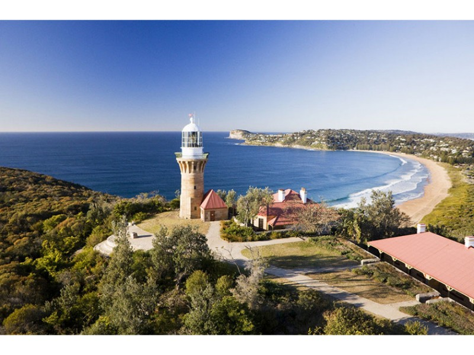
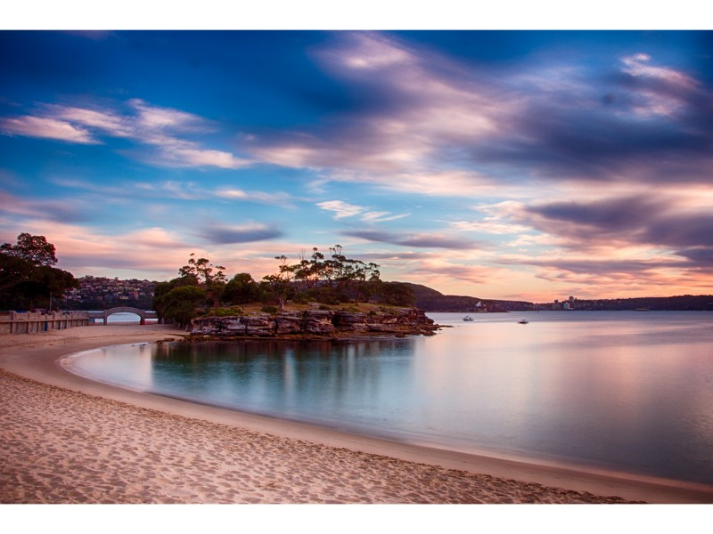
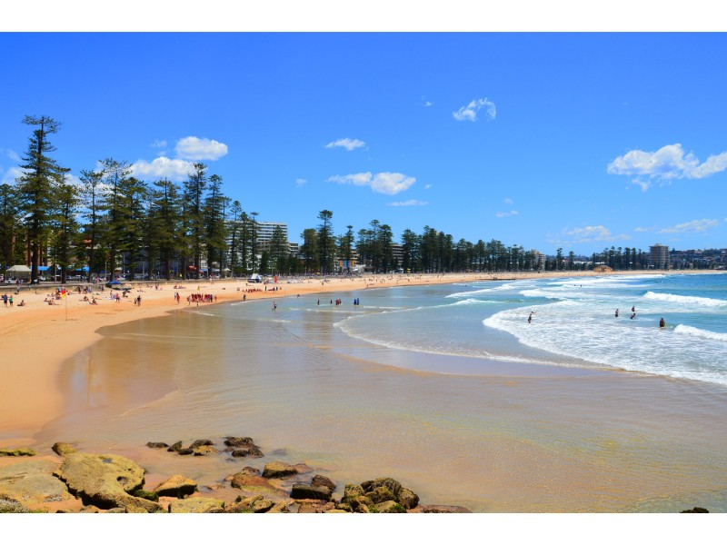
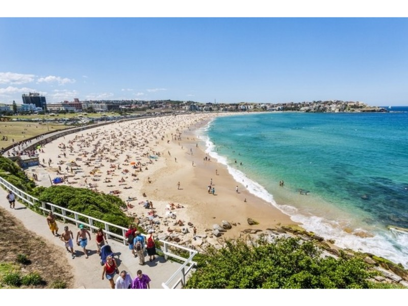

|
Going to the beach is an iconic part of Australian Culture. People go to beaches for fun, sport, views, relaxation and many other reasons. These are my top favourite beaches in order top to bottom: |
|
Palm Beach
Source: http://www.sydney.com
Palm Beach is a more secluded and quiet beach, just over an hour's drice from Sydney. The whole beach is in the shape of a Palm (hence the name) and at the tip of the beach, you are able to walk from one side of the beach to the other in a matter of minutes. My favourite beach of all time because of it's golden sands and crystal blue waters. Perfect for a nice relaxing stroll or swim and the tides in the morning and afternoon provide great waves for a surf. |
|
Balmoral Beach
Source: Tom Beecroft | https://www.flickr.com
Balmoral is located in the urban suburb of Mosman and is most commonly known for the Balmoral and Edwards Beaches with the expensive real estate surrounding them for amazing views of the beach and ocean. There a many activities for all kinds of people such as paddling, snorkling and sailing or you could simply relax at one of the beautiful cafes or restaurants. |
|
Manly Beach
Source: http://www.manlyaustralia.com.au/
The stunning Manly is only a 30-minute ferry ride from the Sydney Circular Quay Harbour and is one of the most well-known beaches in Sydney other than Bondi. With many restaurants, shops and attractions, it is the best place to have a fun day out with friends and family. |
|
Bondi Beach
Source: David Whitley | http://www.thenational.ae
The ever popular and energetic Bondi beach is often filled with people and families during summer enjoying a day out at the beach. Bondi is one of the most iconic beaches in sydney and there is no suprise as to why. Not only is it the closet surf beach to the city but its popularity is also partly due to the idea that Bondi is not only a beach, but a neighbourhood that displays the pure Australian Life. |